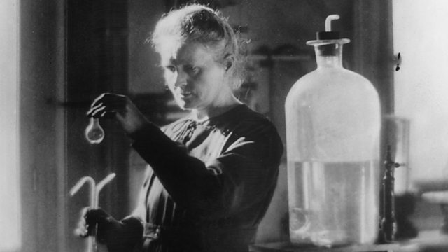
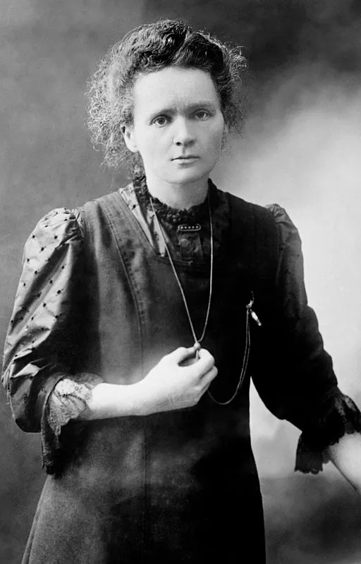
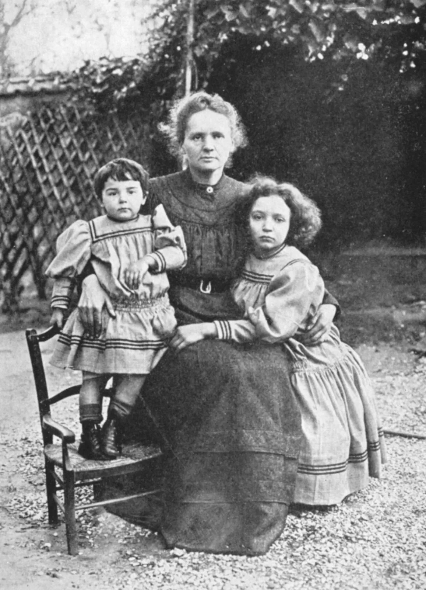
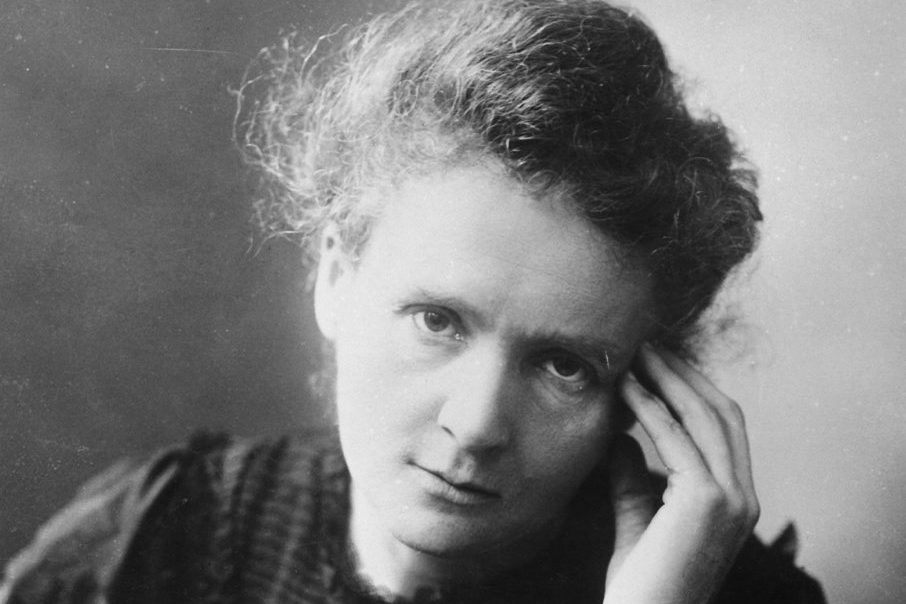
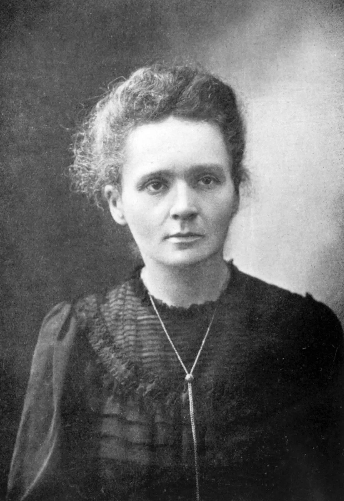

Marie Curie 1867-1934





The birth of her two daughters, Irène and Ève, in 1897 and 1904, did not interrupt
Marie’s intensive scientific work. She was appointed lecturer in physics at
the École Normale Supérieure for girls in Sèvres (1900) and introduced there a
method of teaching based on experimental demonstrations. In December 1904
she was appointed chief assistant in the laboratory directed by Pierre Curie.